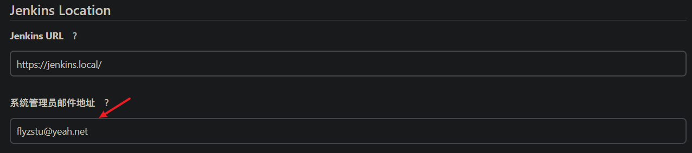
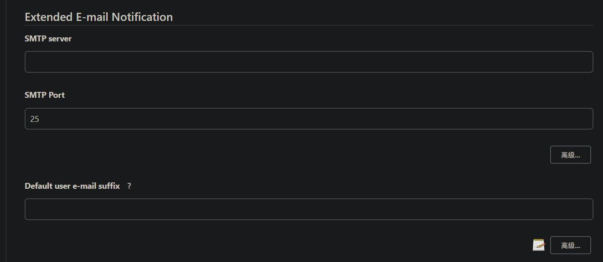
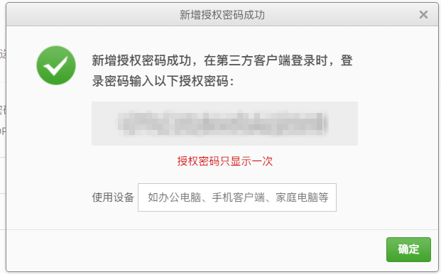
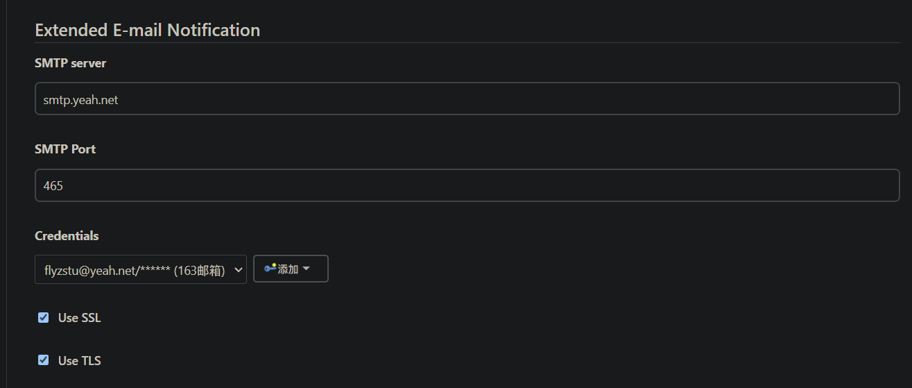
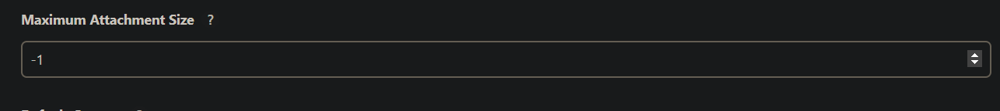
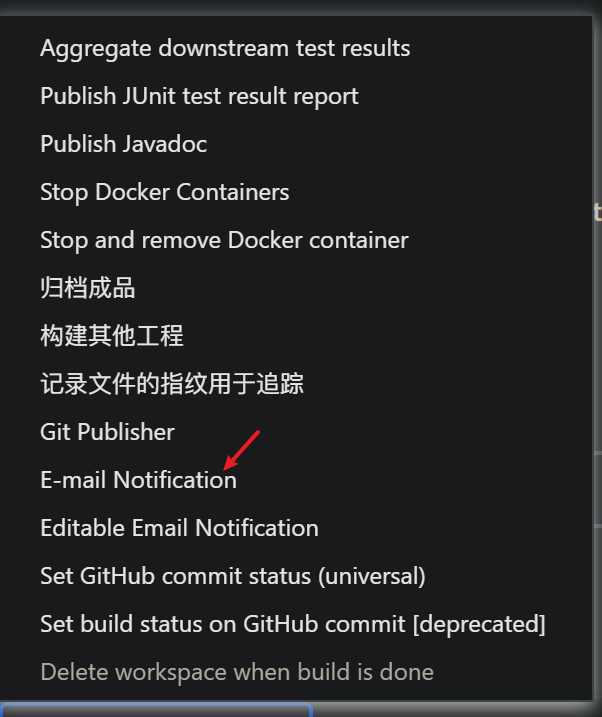

Jenkins实战（三）设置邮件推送
本文主要介绍如何在Jenkins上设置邮件推送。
关键词：Jenkins
需求来源
持续集成时设置邮件推送是一个很清晰的需求，当部署失败时，提示一个消息到群或者是群发邮件，然后运维在查看失败的原因，然后根据问题提出解决方案。
操作演示
设置邮件管理员
这个设置很重要，即发送邮件地址必须在是邮件管理员或者在邮件管理员列表里

设置邮件服务器等信息
- 在主页依次找到系统管理——系统配置——Extended E-mail Notification

- 根据自己的邮件服务提供商选择SMTP服务地址和授权码，这里以网易的yeah邮箱为例
POP3服务器: pop.yeah.net
SMTP服务器: smtp.yeah.net
IMAP服务器: imap.yeah.net

- 将上文生成的授权码以机密的形式存入Jenkins的全局Credentials中，然后选中这个Credentials，端口选择465

修改附件等其他设置
这里设置为-1，即不限制大小。

增加邮件推送到构建后操作
- 选择E-mail Editable Notification

下面分析下这个功能下的各个选项
Disable Extended Email Publisher
关闭邮件推送，这个功能可以在测试功能时使用。
Project From
项目来自，这个写项目构建人即可。
Project Recipient List（项目收件人）
默认选项是$DEFAULT_RECIPIENTS，对应一个邮件列表。
也可自定义填写需要收到邮件的人的邮件。在公司中也可以填写邮件组来简化操作。
Project Reply-To List
默认选项是$DEFAULT_REPLYTO，含义是此项目的回复标头中的电子邮件地址的逗号分隔列表。由于这里就是单纯的发送一个邮件，所以默认即可。
Content Type
发送内容类型，保持默认即可。
Default Subject
默认邮件主题，保持默认即可。
Default Content
默认邮件内容。这个可以在下面进行个性化配置的时候进行设置。这里先保存默认。
Attachments
附件内容。可以将打包好的软件或者其他附属产品发送给开发人员测试。直接指定文件即可，如module/dist/**/*.zip
Attach Build Log
附加构建日志。这个功能很有用，当构建失败时可以直接在邮箱中看到日志。
这里选择Attach Build Log，而不是选压缩的选项。这样可以直接看到日志。
Content Token Reference（内容令牌参考）
这个很有用，可以根据这些Token生成邮件内容。
Triggers（邮件触发器）
这个可以设置什么情况下发送邮件，这里选择Always。
测试推送
折腾了快半个小时，终于设置成功。看似一个很简单的东西，此时也是有技术含量的。

总结
设置邮件推送主要有以下步骤
- 设置邮件管理员
- 设置credentials
- 设置stmp全局设置
- 根据不同的任务设置邮件推送信息（一般不用变）